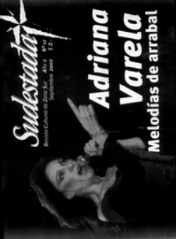

Buscar
Los mensajeros del SIMECA: "Tenemos que sacar las banderas partidarias y unir las luchas"
Edición N° 12
Septiembre 2002
Revista bimensual
Comprar edición impresaSumario
- Adriana Varela: "Quiero seguir estando del lado del que quiere descubrir"
- El lejano sur
- Los mensajeros del SIMECA: "Tenemos que sacar las banderas partidarias y unir las luchas"
Compartir Articulo
Caía la tarde cuando llegamos al lugar pautado para establecer la charla con los trabajadores del Sindicato Independiente de Mensajeros y Cadetes (SIMECA), más conocidos como motoqueros. En la esquina de la sede de H.I.J.O.S; nos esperaban Leandro, "Murga" y Ernesto, tres referentes de la renovadora organización gremial, representantes de esos jóvenes que vemos a diario por el centro, trabajando con ese andar característico, apurados, tirando cambios, esquivando vehículos, tratando de juntar entre viaje y viaje, un mango más. Luego de la pesada jornada laboral que contiene todos los malditos lunes, sentados en la vereda, bebían su merecida cerveza helada y comentaban algunos episodios graciosos del día y los religiosos encontronazos con los tacheros. Cuando culminaron los informales saludos, se apuraron y mataron -la birra- con sorbos largos, estacionaron las motos y entramos al local de H.I.J.O.S, dieron por fin descanso a los celulares y realizamos la entrevista.
El pasado
El aire cargado de gas lacrimógeno descompone y hace llorar a los manifestantes, que desordenados huyen de los palos y las balas. La policía montada se organiza y avanza a paso decidido por la esquina de Diagonal Sur. Intentan encerrar a quienes han osado reclamar lo que les pertenece. Pero no pueden. Antes de llegar los manifestantes se desparraman por Saenz Peña. Como en toda la histórica jornada del 20 de diciembre, los motoqueros avisan exáctamente del avance policial, se paran arriba de sus motos y tocan bocina. Ese día ganan el respeto de la multitud y el apodo de "La caballería del pueblo". "Fuimos de manera individual y espontánea, no como organización. Y jugamos el papel de mensajero que es el que corresponde a nuestro trabajo: llevamos limón para contrarrestar el efecto del gas, transportamos algún herido más o menos leve hacia alguna ambulancia o centro médico" comienza a recordar Murga. A su lado Leandro afirma que "fue un poco de lo mismo que hacemos en la calle, la homogeneidad que se vio entre nosotros el 19 y 20 es parte de nuestra idiosincrasia en el laburo. Nosotros si vemos a un compañero, que a lo mejor no conocemos, que se quedó sin nafta paramos para ayudarlo o ver que podemos hacer. Si se accidenta alguno siempre vas a ver que aunque no lo conozcan hay dos o tres que paran a hacerse cargo".
Ernesto, otro de los que participó de la protesta que echó a De la Rúa, comenta por que salieron a protestar: "salimos a la calle para solidarizarnos porque además nosotros tenemos bastantes elementos como para protestar, nosotros también estamos desconformes".
Presente
A partir de la proliferación del trabajo de mensajería, del incremento cuantitativo de motos en las calles, algunos se dieron cuenta de la necesidad de organizar el gremio que aglutine a estos trabajadores y pelee por los derechos correspondiente. Si bien hoy son una minoría, cada vez son más los que se acercan a los gremios. "Hay muchos motoqueros que no responden a ningún gremio, pero como organización estamos en un período de reestructuración, si bien tenemos altos y bajos en presencia de motos en las actividades, para nosotros sigue siendo importante. Como también el apoyo a los piquetes, a los estudiantes, a las Madres, son actividades en las que nosotros nos comprometemos pero no quiere decir que todos los motoqueros la tomen", aclara Leandro.
"Muchas actividades que hacemos tienen que ver con nuestro gremio, como el aumento de la nafta o si hay pibes que no les pagan hace dos meses y el patrón los amenaza, o por que no se nos permita entrar en moto al micro centro", define Murga. Con respecto a la importancia de las actividades gremiales Ernesto dice que "incentivan más a los compañeros que no están dentro del sindicato, las participaciones que tienen que ver con la solidaridad con los sectores en lucha". Pero no sólo organizarse es el tema, sino que y por sobre todas las cosas entienden que no deben repetir los vicios del viejo sindicalismo, lo contrarestan promoviendo la movilización y la participación. "Es totalmente distinta (la formación de organización gremial propia), yo creo que un poco porque a este tipo de trabajo todavía no le vieron la beta las centrales tradicionales, aunque ahora formaron un sindicato, gente del PJ" subraya Leandro.
Ernesto agrega que "también la CGT de Moyano quiso nuclearnos con logística y distribución. Lo que pasa es que es un laburo que está más que en negro, entonces Moyano puede tomar a los trabajadores de OCA. Pero un chabón que tiene una agencia con 5 o 6 pibes están todos en negro, sin seguro de vida ni un carajo". La charla amena poco a poco va exigiendo planteos, definiciones políticas y Murga las explicita primero: "creo que una de las virtudes que destaca al sindicato es que ninguno de los que lo integramos se dedica pura y exclusivamente a esto.
Estamos todos trabajando, sabemos lo que estamos hablando y por qué tenemos que pelear. La mayoría estamos trabajando a lo mejor de manera independiente en alguna cooperativa o en alguna agencia y es por eso que vemos problema de cerca. Después cada uno tiene sus ideas políticas pero tratamos de no mezclarlas acá adentro, que el sindicato siga siendo independiente. Que no tenga línea partidaria ni vínculos con los sindicatos de la burocracia". Esto no impide que haya una estrategia para llegar a sus pares gremiales, cara a cara: "de la comisión de gremiales salió un plan hacia los motoqueros de todas las agencias que plantea que cada integrante del sindicato tenga un contacto con dos o tres agencias, que pueda trasmitirles a los motoqueros lo que nosotros estamos haciendo, invitarlos, por que hace falta gente trabajando" explica Leandro.
Para profundizar el tema, Ernesto enumera las características del SIMECA. "Por sobre todo Independencia de partidos y centrales obreras, horizontalidad, decidimos todo por asambleas, no tenemos jerarquías ni cargos rentados y solidaridad con los movimientos en lucha". En este sentido, Leandro comenta que "nosotros creemos que cualquier lucha que se de dentro de los sectores populares puede ser la nuestra, mañana podemos ser un desocupado más de cualquier barrio o un colectivero... menos un taxista. Y apoyamos a todas las organizaciones que tengan esta orientación asamblearia: Brukman, el IMPA, las asambleas barriales.
Después del 20 de diciembre hemos participado en muchas marchas que a lo mejor no tenían que ver específicamente con nosotros: por el boleto estudiantil, la marcha de los piqueteros, el piquete por los caídos. Nosotros prestamos colaboración en todas ellas". El último censo reveló que en capital hay más 58.000 mensajeros. SIMECA trata de reunir a los que son mensajeros en bicicleta, en moto, a pie, los que hacen delibery (llevar y traer).
En el sindicato los más activistas son unos 80, pero a nivel representatividad, en la calle están bien instalados. Esto les trae, fundamentalmente a partir del 20 de diciembre, persecución por parte de la policía. "La policía trata de infundir el miedo, nos ve en las marchas y después nos para en la calle para hacernos multas y te dicen "a vos te vi en la marcha, cuidate". A las motos las persiguen mucho por que es un factor nuevo y de sorpresa para la policía en las movilizaciones" enfatiza Murga. "Muchas veces hemos aparecido de sopetón en una marcha y ellos no pueden prever lo que vamos y no vamos a hacer . Como no lo tienen controlado nos ven como un rival, sobre todo después del 20 cuando en Tacuarí y Avenida de Mayo cae Gastón Rivas,(fusilado) por la policía- empezaron a pasar por las paradas, a catear a los compañeros en una clara persecución política" explica Ernesto, profundizando el sentido de la selectiva persecución que sufren.
A pesar de estos atropellos, los motoqueros están dispuestos a involucrarse en cada lucha que les parezca justa. "La familia de los pibes que fusilaron en Floresta nos pidió colaboración en el corte de calles como Gaona y Juan B Justo (que son avenidas difíciles para cortar), nosotros tomamos el compromiso de ir. Ahí la policía también fue a provocar, nos apuntaron desde un auto. La cosa ya está dirigida, saben lo que buscan" ejemplifica Leandro con la bronca de quien ha visto la cara de la injusticia.
El futuro
Los tres motoqueros se entusiasman cuando hablan del futuro, de la organización gremial y su consolidación. Para esto, tienen en mente el proyecto pro Casa donde, según Murga, "nos podremos reunir a discutir, poner un comedor para abaratar costos a los mensajeros y para la gente de la calle en general". Esta tarea tiene algunos puntos y condiciones ya acordados, como que debe quedar en el ámbito de la Capital (todos trabajan en el centro) y que el lugar servirá para recaudar fondos para el gremio, entre otras cosas. Hay otros que todavía deben ser discutidos en asambleas, como si el edificio que se use será tomado o alquilado, esta decisión como todas, será difícil, pero surgirá del consenso y de la opinión de todos
Comenzamos a despedirnos cuando llegó la noticia de que el alemán se encontraba en el local, estaba por ahí. Cuando preguntamos quien era, nos contaron que era alguien que quiere llevar un representante del gremio a Europa para que explique esta experiencia. Parece ser que "la caballería del pueblo" esta haciendo las cosas bien.
(La nota completa en la edición gráfica de Sudestada N°12)
Comentarios
Soledad Fracchia, Jaime Galeano, Osvaldo Gonzalez
Articulos más vistos


LIBRERÍA SUDESTADA

Colección infantil

Distribuidora de Libros

Suscripción

Sudestada en URUGUAY